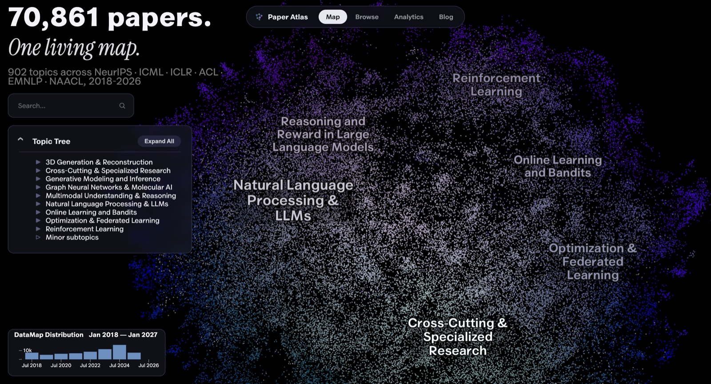
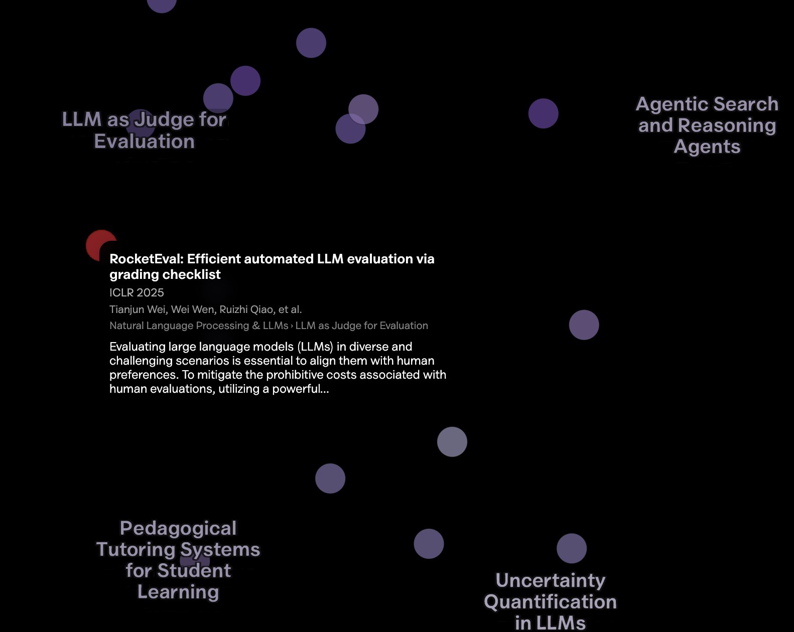

Paper Atlas: a map of 70,861 AI papers
"If I have seen further, it is by standing on the shoulders of Giants," Newton wrote to Robert Hooke in 1676. That's what literature review is for: knowing what's already been tried, what worked, and what didn't, before you add anything new. Despite how important it is, I didn't see many tools helping with it. It's usually Google Scholar, or the citation network: how all the works in a niche connect to each other through citations.
I wanted a semantic map instead. Papers placed near each other by what they're actually about, not by citation count or search rank. Then I saw Alammar's NeurIPS 2025 map and knew that was the shape of it, just not limited to one venue and one year.
So I built Paper Atlas: an interactive semantic map of every accepted paper from six top AI/ML conferences, NeurIPS, ICML, ICLR, ACL, EMNLP, and NAACL, 2018 through 2026. 70,861 papers in total. It's free, it's a static site with no backend, and the code is open source.

Paper Copilot already covers the numbers side of these venues well: submission stats, acceptance rates, reviewer dynamics. What it doesn't have is a semantic map. You can see how many papers got in. You can't see what they were about, or how that changed. Alammar's map is closer to what I mean, but it covers one conference and one year. Paper Atlas takes the same idea further: six venues, eight years, and three levels of topic hierarchy (902 fine-grained clusters, 44 mid-level topics, 8 top-level research areas) instead of a flat list.
Here's how it works. Every paper's title and abstract goes through an embedding model, Qwen3-Embedding-8B. UMAP projects those embeddings down to two dimensions for the map you see, and separately to ten dimensions for clustering. HDBSCAN finds the clusters. Each cluster gets scored for its most distinctive keywords with c-TF-IDF, and an LLM turns those keywords plus a sample of real titles into a label.
One real example, cluster 839: the keywords were preference, reward, rlhf, preferences, dpo, human, alignment, feedback, pulled from 528 papers. Titles in it include "A Deep Dive into the Trade-Offs of Parameter-Efficient Preference Alignment Techniques" and "RL4F: Generating Natural Language Feedback with Reinforcement Learning for Repairing Model Outputs." From those keywords and titles, the label came out as "Preference-based reward learning for alignment," which is exactly what a researcher in that area would call it.
The pipeline itself was the easy part. The real work was checking that each step did what I assumed, and fixing what broke in ways I didn't expect.
Take the embedding model. The standard choice for scientific papers is something citation-trained, like SPECTER2. It's trained so that papers citing each other land close together. I tested it against a general-purpose embedder and against Qwen3-8B. The scoring used ICLR's own author-supplied keywords, the one piece of independent ground truth in this corpus. SPECTER2 lost on keyword agreement. It also showed no advantage on the opposite failure mode, where an embedding groups papers by venue rather than by topic. The field-standard choice for scientific papers turned out to be the wrong one here, and that was surprising enough to write up properly.
The three hierarchy levels come from one clustering, read at three resolutions of the same density tree. They aren't three separate runs that could disagree with each other. I checked whether each fine-grained cluster actually sits inside the coarse cluster the map claims it does. It held between 97% and 100% at every resolution I tested.
The clustering isn't perfectly stable either. Rerun the whole pipeline with a different random seed and two runs agree at about 0.57 on the adjusted Rand index. The map you're looking at is fixed (seed 42) and reproducible, so it doesn't shift between visits, but a fresh run would draw some boundaries differently. That comes from UMAP's stochastic optimization, not a knob I failed to tune. For comparison, clustering on the 2D display coordinates scored 0.30 on an earlier subset, and the adjusted Rand index is built so that random assignment lands near zero.
One bug taught me something about the visualization library, not my own code. The topic tree sometimes showed "Minor subtopics" nested inside another node also called "Minor subtopics," which reads like a mistake even when the underlying data isn't wrong. The cause: the parameter that correctly colors noise points on the map canvas also makes the library's own hierarchy builder recurse and generate a second synthesized "Minor subtopics" node, whenever leftover noise sits inside a parent that is itself a noise bucket. I decoded the actual tree data to check how often this happened: 2 cases out of 54, both genuine dead ends with zero children, not a sign the clustering itself was broken. The fix matches on the structural pattern (a parent labeled "Minor subtopics" containing a child labeled the same), not the two specific node IDs, so it keeps working the next time the corpus is reclustered and those IDs change. Every decision like this, including the ones that didn't work, is in the decision log.
The clustering is also where the interesting findings come from, and none of them show up in acceptance counts, only once the papers are grouped by what they're about. NLP and LLMs have held a steady 44.7% to 46.3% share of the corpus every year since 2018, which runs against the story the last two years of hype would tell you. Optimization & Federated Learning moved the most and in the opposite direction, falling from 15.5% of the corpus to 6.4%. On the growth side: Graph Neural Networks & Molecular AI grew 2.6x (1.8% to 4.7%), Multimodal Understanding & Reasoning also grew 2.6x (2.7% to 7.1%), and 3D Generation & Reconstruction grew the fastest of any category at 4.25x (1.2% to 5.1%). The analytics page plots all of these as lines, not just the ones above.
Two smaller things worth knowing. The browse page is a searchable table of every paper, for when scanning beats exploring. On the map, hover any point for its authors, topic, and abstract, search to highlight matches, and use the histogram at the bottom to filter by year.

Long term, I'd like Paper Atlas to reach the audience Paper Copilot has, with the same idea pointed at what papers are about rather than how many got in. The contributing guide and open issues hold the current backlog: richer per-paper summaries, institution rankings, submission and acceptance rate tracking, and a citation map alongside the semantic one. Some of those are genuinely hard, and they're scoped that way.
If you build something on the data, or find something in the map I missed, I want to hear about it.